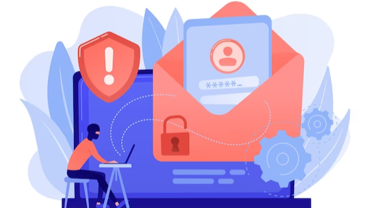

Spear phishing is a type of targeted cyber attack that tricks users into clicking malicious links or opening attachments in email messages. These email messages can appear to come from a legitimate source, such as a trusted organization or individual. Cyber attackers use spear phishing to steal sensitive information, such as login credentials or financial information.
There are several ways to protect yourself from spear phishing attacks.
First, be aware of the signs of a spear phishing email. Second, do not click on links or open attachments in email messages from unknown or untrusted sources. Third, use security software to protect your computer from malware. Finally, report any suspicious email messages to your IT department or security team.
Companies are especially susceptible to spear phishing attacks. A lot of an organization's data is available online for anyone to find, including attackers. Corporate websites can have a ton of technical information and jargon, key personnel, customers, events, and even internal software tools. Social networks can reveal where someone works or has worked in the past, and with just a little bit of searching an attacker can easily find the company hierarchy.
In a spear phishing email, these little details available freely online can help an attacker sprinkle their email with names, places, or terms that lend enough validity to convince an otherwise savvy email recipient to click a malicious link. That link may send them to a website ready to capture sensitive internal-only credentials, thus allowing the attacker to roam freely on the corporate network and steal intellectual property or customer data.
Avoiding spear phishing attacks means deploying a combination of technology and user security training. Here are eight best practices businesses should consider to protect against these attacks, according to the report.
There are a few key things you can do to protect yourself from spear phishing attacks. First, don't click on any links in emails. This is a good rule to follow for all phishing-type attacks. Additionally, make sure your organization has policies in place that reference these more advanced tactics and that you have strong solutions implemented to help educate employees on how to defend against them.
Find a solution that detects and blocks spear phishing attacks including BEC and brand impersonation that may not include malicious links or attachments. Machine learning tools can analyze communication patterns in an organization and spot any anomalies that may be signs of an attack.
Traditional email security that uses blacklists for spear phishing and brand impersonation detection may not protect against zero-day links found in many attacks.
Find tools that use AI to recognize when accounts may have been compromised, to avoid more spear phishing attacks originating from those accounts.
DMARC authentication can help prevent domain spoofing and brand hijacking, which are common techniques used in impersonation attacks.
Multi-factor authentication adds another layer of security over a simple username and password, and is an effective security measure.

Identifying and reporting spear phishing attacks should be part of any security awareness training. Businesses can use phishing simulations for emails, voicemails, and text messages to train users to identify them as well. Businesses should also have procedures in place to confirm any monetary requests that come via email.
Because spear phishing attacks are so personalized, employees may not always recognize or report them. Companies should conduct regular searches to detect emails with content known to be common among hackers, including subject lines related to password changes.
Combine technology solutions and business policies to ensure emails with confidential or sensitive information are blocked and do not leave the company.
Considering all this, email is often the best mode of communication for company executives, it's important to ensure that staffers aren't falling for spear phishing scams. This form of phishing targets users with detailed information about a particular target. Users who click on malicious links or attachments are redirected to a malware-ridden site, where the malware is installed.